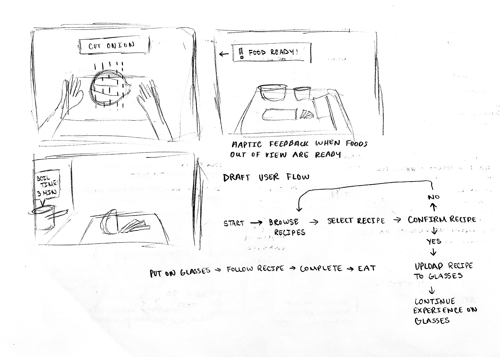
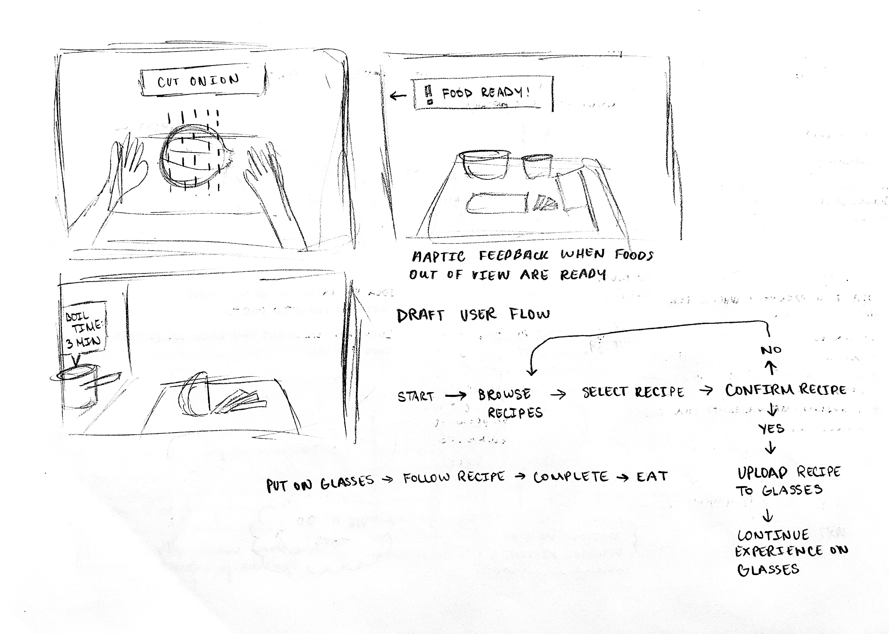

A6: Interactive Prototype
December 6, 2021
The Goal
Design an application that has both a mobile and wearable component. Deliver the user flow of the complete experience, a storyboard and graphical representation of haptic responses for the user, and a clickable greyscale lo-fi prototype of the mobile application.
The Design
For this assignment, I designed an augmented reality cooking experience that's supported by the Cooking Llama mobile application (inspired by the Japanese video game series, Cooking Mama) and AR glasses with haptics.
Designed with beginner cooks (and forgetful cooks like me) in mind, the idea is that users can wear these AR glasses and view the recipe, guiding instructions, helpful tips, and be notified of cooking time completion without having to pick up a phone or tablet to check this information themselves during the cooking process. Users select and upload recipes to the AR glasses using the mobile application, and the glasses provide haptic feedback throughout the cooking journey. I was motivated to create a cooking experience that didn't require a lot of back and forth motion between prepping/cooking and juggling a physical cookbook or device. I often forget what the next step is when I'm cooking, which means that I have to wash my hands, pick up my phone to check the recipe, and wash my hands again before touching the food, every time. With AR glasses that assist the cooking experience, users don't have to stop what they're doing to pick up another device, and users would save more water! Here are some of my sketches from brainstorming:
 

Storyboarding
Once I had my idea, I began storyboarding to illustrate the user's complete experience. I sketched this in my sketchbook first, before redrawing it digitally. The storyboard showcases the user feeling hungry, putting on the AR glasses, entering the app, selecting and uploading a recipe, cooking with the glasses on, and completing the dish successfully.

Storyboard (Click to See in New Tab)
User Flow
After storyboarding, I created a sketched a rough user flow for the experience, largely focusing on the mobile application experience, before creating the final user flow using Figma.
Haptics
Creating the user flow helped me think through what kinds of haptics the AR glasses would have. Here are the haptic patterns I came up with:

Lo-Fi Interactive Prototype
Once the storyboarding, user flow, and haptics were complete, I worked on developing the wireframes for the mobile application and making it interactive. Users run through the steps of entering the app, 'connecting' their AR glasses, selecting a recipe, and uploading the recipe to the glasses. I created a total of nine screens.
User Testing
In addition to sharing my deliverables with 4 classmates for critique, I conducted one user test with one of my neighbors. During this user test, I first explained the overall idea to the user before asking them to review and critique my storyboard, user flow, haptics graphical representation, and interactive prototype. I encouraged my user to think aloud during the user test and to specifically mention what they liked, didn't like, what may have been confusing, and what they may have found useful about the design. By giving the user my deliverables on my iPad, I was able to have them annotate directly on my designs.
Analysis
User Test Feedback:
- Storyboard: AR glasses look easy to start up. Haptic feedback when paired with phone is useful. Haptic feedback for finishing a recipe may be unnecessary. Overall idea is "very cool" and AR use case is "helpful."
- User Flow: User wants to be able to browse for a recipe on the mobile app before putting on the AR glasses.
- Haptics: All haptics make sense, however the haptics for successfully uploading a recipe and powering the glasses on are difficult to distinguish.
- Interactive Prototype: Simple, straightforward experience. User had a positive experience but wishes that there was one more screen after uploading the recipe that showcased progress or the current cooking step as the user is wearing the AR glasses.
Critique Feedback and Improvements:
- The feedback for most of my materials was all positive! We spent more time talking about redesigning the fit of the AR glasses and how its use cases could be expanded into grocery shopping and eliminating food waste.
-
One classmate asked me to consider how the AR glasses would combat steam fogging up the glasses while cooking. She also mentioned that glasses don't fit well on her
face and tend to slide down. She suggested that I consider different ways to attach the glasses to the body, such as redesigning them as goggles.
- Improvement: There could be a separate version of these glasses that attach more firmly onto the face.
-
Consider expanding the mobile application's use cases:
- Improvement: Add grocery lists for recipes and use AR glasses while shopping to shop for exact amount of food needed, eliminating potential food waste.
What I Would Do Differently in the Future:
- If I had more time, I would have created the wireframes for the wearable's display.
- I failed to consider users that already wear glasses from the beginning. Since this was the first prototyping stage, I thought that later prototypes could be prescription friendly. I also thought that in addition to glasses, this AR technology could be designed into a glasses' attachment for users that already wear glasses.
- Next time, I would set a limit to 4-5 haptic patterns. I would set this limit, because I think 6 would be too many different patterns to remember.
Key Findings and Learnings:
- For me, the most helpful order to approach this assignment was to storyboard, then make the user flow, haptics, and finally the interactive prototype. The storyboard helped me think about the general user flow, which then becomes more flushed out while making the final user flow. Seeing the user flow allowed me to easily assign places for haptic feedback. The interactive prototype was built off of the steps in the user flow.
- User flows are very helpful!